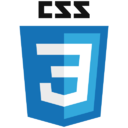

Mes compétences
Gestion de projet
- Connaissance structure et pilotage de projet
- Définition du besoin client, AMOA, rédaction du cahier des charges fonctionnel, planification, suivi, reporting
- MS PROJECT / JIRA / CONFLUENCE / MANTIS
- Trello, Figma, Miro, Canva
- Connaissance Agilité SCRUM (certification PSPO1 & PSM1) et SAFe practitionner
Domaine du numérique
- HTML 5 & CSS 3
- JavaScript
- GitHub
- Bootstrap / Wordpress
- Tests & Recette
- Notions d'architecture des réseaux, de DevOps, de Bases de données SQL


Domaine RH
- Administration du personnel
- Formation professionnelle
- Entretiens annuels
- Recrutement de personnel
- Gestion de personnel intérimaire
- Préparation de la paie
- Disciplinaire
Logiciels utilisés :
- ADP
- GESTA
- E-TEMPTATION
- SUITE OFFICE
- SUITE GOOGLE
- DISPATCHER
- HELIOS
Domaine de la relation client
- CONSEIL : clients particuliers ou entreprises, suivi des projets, animation de réunions d'information.
- RELATION CLIENT : accueil client, suivi CRM.
- COMMERCE : suivi dossiers administratifs, relances.
Mon expérience
Assistante Ressources Humaines
Filiales de la SADE (groupe Veolia) - Rouvroy (62)
Septembre 2022 à Avril 2023
CDI. 3 filiales de la SADE pour environ 130 salariés dans le domaine du BTP. Assistanat RH, gestion des absences, gestion de la formation professionnelle et de l'intérim.
Assistante Administrative et Commerciale
Basile - Lens (62)
Avril 2021 à Septembre 2022
CDI. Concession automobile de 10 salariés dans la vente et la réparation de véhicules d'occasion. Accueil des clients, assistanat du chef d'atelier, gestion des dossiers achat-vente de véhicules.
Gestionnaire Formations
OPCO Atlas - Lille (59)
Octobre 2012 à Mars 2021
CDI. Organisme financeur de la formation professionnelle pour les entreprises du conseil, de l'ingénierie et du numérique situés en hauts de France et en Normandie. Gestion des demandes de financement et conseil aux entreprises dans le domaine de la formation professionnelle.
Assistante Ressources Humaines
OLDHAM - Arras (62)
Mars 2012 à Septembre 2012
CDD. Remplacement de congé maternité. Entreprise de la métallurgie de 250 salariés dans la confection de détecteurs de gaz. Prise en main de la fonction RH.
Assistante Ressources Humaines
BENALU - Liévin (62)
septembre 2010 à Août 2011
Contrat de professionnalisation. Entreprise de métallurgie de 300 salariés dans la confection de semi-remorques en aluminium. Découverte de la fonction RH.
Ma formation
Formation Chef de projet informatique / Consultant fonctionnel
M2I Formations / décembre 2023 à mai 2024
Formation dans le cadre du PRF : Gestion de projet, initiation à l’informatique (low code/no code/requêtes SQL), méthodologie cycle en V et AGILE, initiation au role de Scrum Master et Product Owner, recettes fonctionnelles, ergonomie, UI/UX Design en interface graphique
Nurserie numérique
1formation=1job / septembre 2023 à octobre 2023
Découverte des métiers et initiation à l’agilité ; premiers pas en développement « front » en mode projet, dans la peau d’un développeur ; le cloud et le devops ; travail sur le CV, le projet professionnel et visualisation de l’offre de formation régionale.
BAC+5 Titre Manager des RH
Openclassrooms /2020
Piloter la gestion des ressources humaines en lien avec les objectifs stratégiques de l'entreprise.
Licence professionnelle GRH
IUT de Lens / 2011
Assister le DRH dans tous les domaines de la gestion des ressources humaines, spécialisé TIC.
BTS Assistant de manager
Lycée Condorcet / 2010
Soutenir les missions du Responsable de service, gérer et organiser l’activité du service.
Licence LCE Anglais
Université d'Artois / 2008
Approfondir ses connaissances et ses compétences linguistiques pour parvenir à une excellente maîtrise de la langue étrangère choisie.
Baccalauréat Littéraire
Lycée Henri Darras / 2005
MENTION AB - Option Anglais Approfondi.
Mon niveau en langues
| Langue | Niveau | Information |
|---|---|---|
| Français | C2 maîtrisé | Langue maternelle |
| Anglais | C1 autonome | TOEIC Score 910 |
| Espagnol | A2 intermédiaire | Niveau BAC+2 |